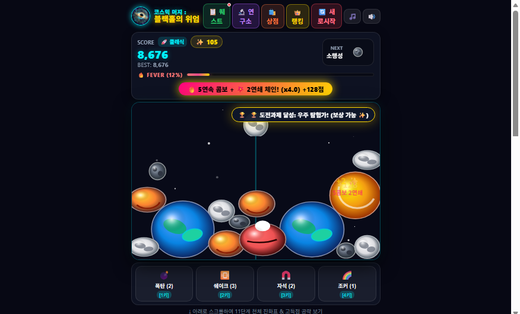

코스믹 머지 : 블랙홀의 위엄(줄여서 코머블)은 DSC GAMES가 그동안 올려온 가벼운 웹 게임들과는 다른 결로 만든, DSC 오리지널 1호작입니다. 소행성 두 개를 합쳐 달을 만들고, 달과 달을 합쳐 수성을 만드는 식으로 시작해 최종적으로 11단계 초신성 블랙홀을 탄생시키는 것이 목표인 우주 테마 머지 퍼즐입니다. 흔히 수박게임으로 불리는 합치기 퍼즐 장르를 좋아한다면 바로 적응할 수 있는 구조이면서도, 우주라는 소재와 블랙홀 피날레라는 확실한 클라이맥스로 그 장르를 한 단계 더 발전시킨 버전입니다. 아래에서 이 게임을 다른 머지 게임과 구분 짓는 기획 의도와, 실제로 점수를 끌어올리는 데 도움이 되는 공략 요령을 정리했습니다.

🪐 기존 머지 게임과 다른 점
1. 정적인 배치가 아니라, 중력으로 움직이는 판
보통의 머지 게임은 칸에 딱 맞춰 떨어지는 정적인 배치가 전부입니다. 코머블은 판 위의 모든 천체에 서로 미묘한 중력이 작용해서, 가만히 둬도 행성들이 조금씩 끌리고 흔들리며 위치가 계속 변합니다. 같은 상황이 두 번 반복되지 않기 때문에 다른 머지 게임보다 훨씬 동적인 움직임을 볼 수 있고, 그만큼 다음 합성 경로를 계산하는 재미도 커집니다.
2. 언제 끝날지 모르는 게임이 아니라, 명확한 클라이맥스가 있는 게임
대부분의 머지 게임은 판이 가득 차야 끝나는, 끝을 가늠하기 어려운 구조입니다. 코머블은 다릅니다. 최종 11단계 초신성 블랙홀을 완성하는 순간 온 우주의 모든 천체를 한 번에 빨아들이는 피날레가 발동하며 막대한 보너스 점수를 획득합니다. 판을 정리하는 상쾌함은 기본이고, 그 정리가 곧바로 압도적인 점수 보상으로 이어지는 명확한 클라이맥스가 있다는 점이 가장 큰 차별점입니다.
3. 짧고 굵게 끝나는 한 판
천체를 성장시키는 속도와 블랙홀 피날레 타이밍이 맞물려서, 다른 머지 게임에 비해 한 판이 상대적으로 짧게 끝납니다. 대신 그 짧은 시간 안에 점수를 얼마나 효율적으로 쌓았는지가 명확하게 갈리기 때문에, 자투리 시간에 한두 판만 돌려도 실력 차이를 바로 체감할 수 있습니다.
🏆 고득점을 위한 3가지 플레이 방식
1. 콤보 쌓기 위주 플레이
한 번의 합성으로 끝내지 않고 연속으로 합성을 이어가는 콤보 스트릭과, 한 번의 투하로 2단·3단씩 연달아 터지는 연쇄 체인 콤보는 곱연산으로 점수가 붙습니다. 판을 넓게 보고 다음 수, 그다음 수까지 미리 그려두면 콤보가 끊기지 않고 이어지면서 점수가 기하급수적으로 불어납니다.
2. 블랙홀 완성 위주 플레이
자잘한 합성 점수보다, 최종 블랙홀을 최대한 빨리 완성해서 피날레 흡입 보너스를 노리는 방식입니다. 흡입 순간의 점수는 기본 점수에 흡입한 천체 수, 티어 가치 배율까지 곱해지기 때문에 판이 복잡해지기 전에 승부를 보고 싶은 플레이어에게 잘 맞는 전략입니다.
3. 피버 타임에 맞춰 터뜨리는 정교한 타이밍 플레이
가장 정교한 방식입니다. 콤보 게이지가 찰 만한 합성을 일부러 아껴뒀다가, 전체 득점이 배로 뛰는 피버 타임이 켜지는 순간에 몰아서 터뜨리는 플레이입니다. 평소라면 나눠서 얻었을 점수를 배율 구간 안에 몰아넣는 방식이라 손이 많이 가지만, 그만큼 한 판의 최종 점수 차이가 가장 크게 벌어지는 방법이기도 합니다.
세 방식 모두 정답은 아니고, 자신이 선호하는 플레이 스타일에 맞춰 상단의 연구소 업그레이드를 투자하면 해당 방식의 점수 획득을 더 강화할 수 있습니다. 콤보 위주라면 콤보·체인 관련 연구를, 블랙홀 완성 위주라면 블랙홀 관련 연구를 우선하는 식으로 자신만의 빌드를 만들어보세요.
🎒 아이템은 적재적소에 — 폭탄 · 쉐이크 · 자석 · 조커
상점에서는 폭탄, 중력 쉐이크, 양자 자석, 무지개 조커 아이템을 각각 여러 개씩 구매해 둘 수 있습니다. 다만 실제 한 판의 게임 안에서는 이 중 각 아이템을 딱 1개씩만 사용할 수 있다는 점이 중요합니다. 즉 인벤토리에 아무리 많이 쌓아둬도 그 판에서 꺼내 쓸 수 있는 건 종류당 한 번뿐이므로, 판이 위태로울 때 아무 때나 쓰기보다 가장 효과가 클 타이밍을 정확히 노려서 아껴뒀다 쓰는 감각이 곧 고득점 플레이의 일부입니다.
📊 오늘 · 주간 · 월간 · 명예의 전당 랭킹
코머블은 자체적으로 오늘 / 주간 / 월간 / 명예의 전당(전체) 네 가지 기준의 랭킹을 제공합니다. 하루 단위로 순위가 갱신되니 매일 도전할 이유가 생기고, 주간·월간 랭킹으로는 꾸준히 실력을 끌어올리는 재미를, 명예의 전당으로는 역대 최고 기록에 도전하는 목표를 각각 챙길 수 있습니다. 로그인 후 플레이하면 DSC GAMES 사이트의 내 최고 점수 기록에도 함께 반영됩니다.
지금까지 정리한 공략을 참고해서, 코스믹 머지 : 블랙홀의 위엄에서 직접 은하 대통일에 도전해보세요.